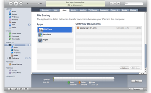

CHMView



Using iTunes 9.1 or later, you can copy files to and from your computer and apps on iPad that support File Sharing.(http://support.apple.com/kb/ht4094)
1.Connect iPad to your computer using the included Dock Connector to USB cable.
2.Click the Apps tab and scroll down to the bottom of the page.
3.Under the File Sharing section, you’ll find a list of apps currently installed on your iPad that support File Sharing. Select CHMView to view a list of the files associated with the app on your iPad.
4.Drag and drop files onto the Documents list to copy them to the app on your iPad.
Add CHM files through iTunes File Sharing
Saturday, October 30, 2010
{ Files Sharing Tips}
Select the apps of CHMView and a list of Documents will be shown on the right side.
You can drag and drop files onto the Documents list to store it to iPad.